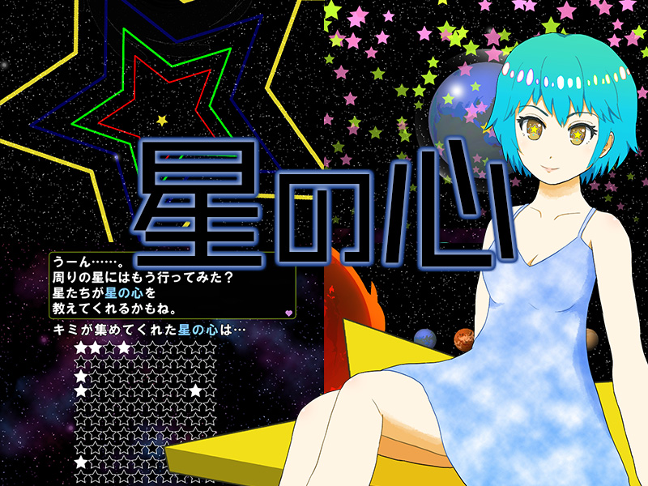
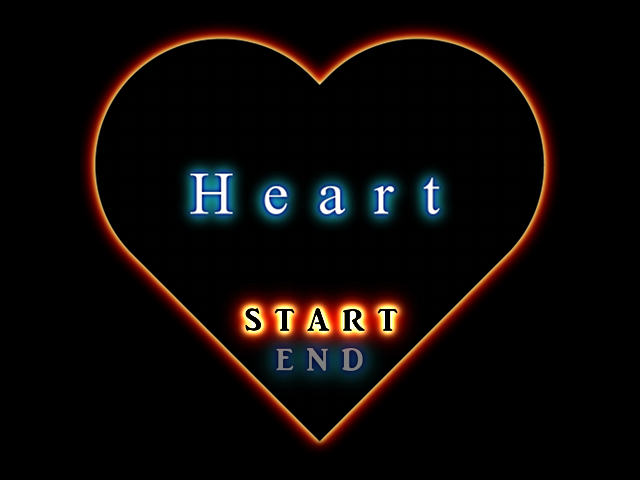
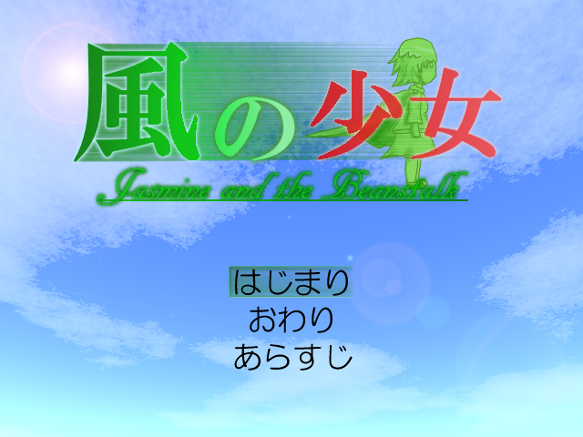
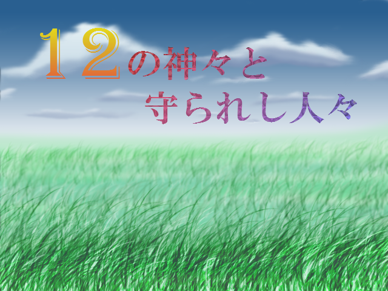
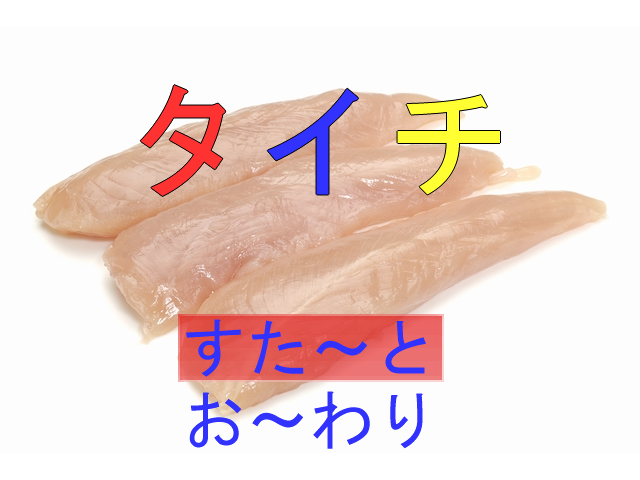
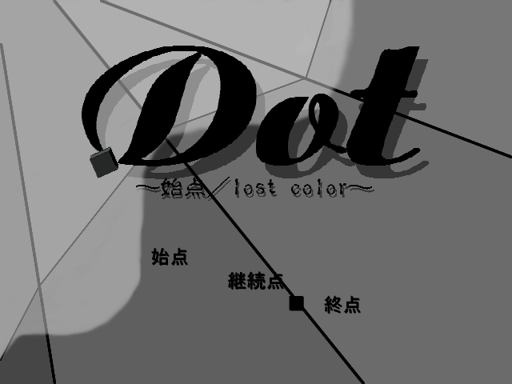

WOLF RPGエディターで制作した作品の一覧です。すべて無料で遊べます。

キミの手で星の心を集めよう！第14回ウディコン参加作品。

あなたの探究心、お見せください。第5回ウディコン参加作品。

慣性と物理の法則を駆使して駆け抜ける、全10＋EX4ステージのアクション。第3回ウディコン参加作品。

リアルタイムで変化する情勢のなか、魔王へ挑む時期は自分で決められる。らんぱ２参加作品。

タイミングよくキーを押して逃げ切ろう。むずかしさ3つ、エンディング3つの10分ゲーム。らんぱ２参加作品。

色を失った世界に色を取り戻す物語。ブラウザ版で遊べます。第3回非公式ウディコン参加作品。